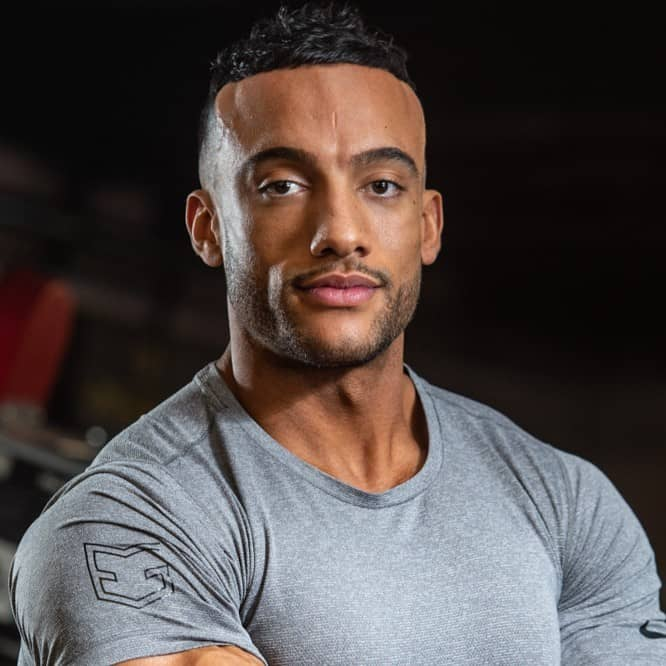
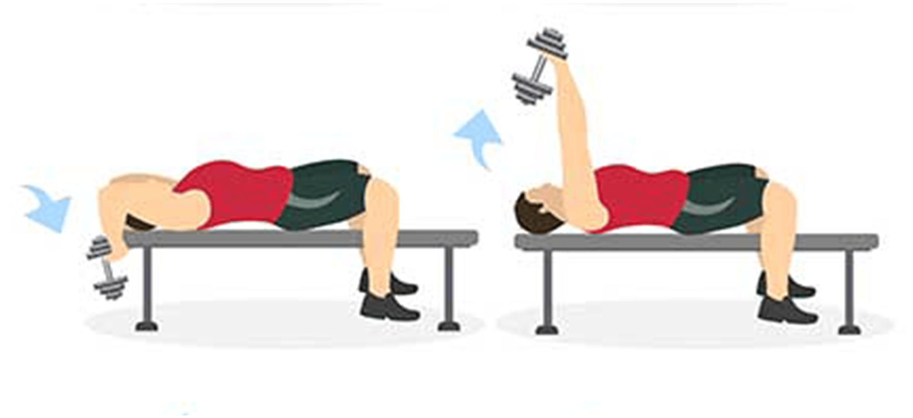
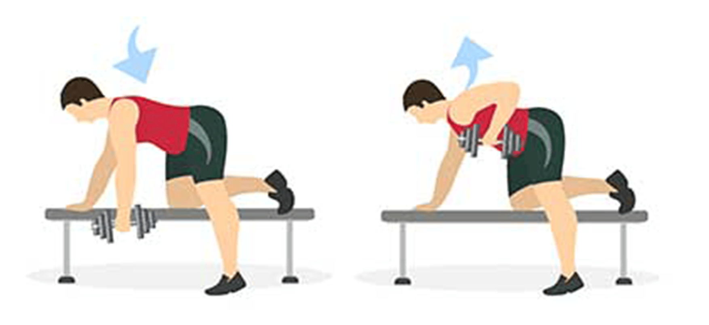
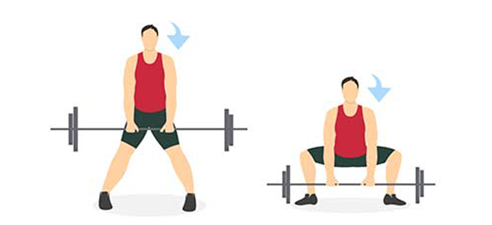
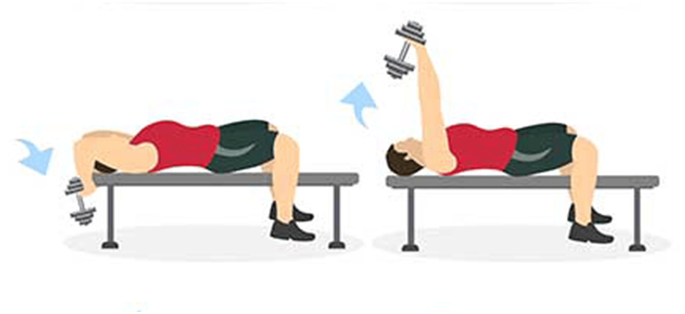
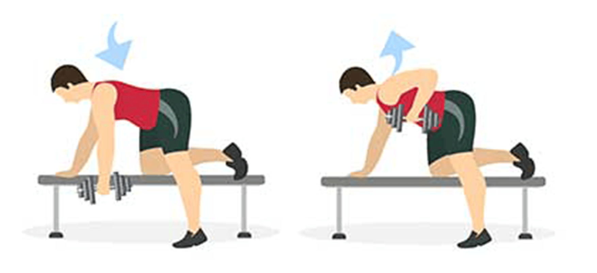
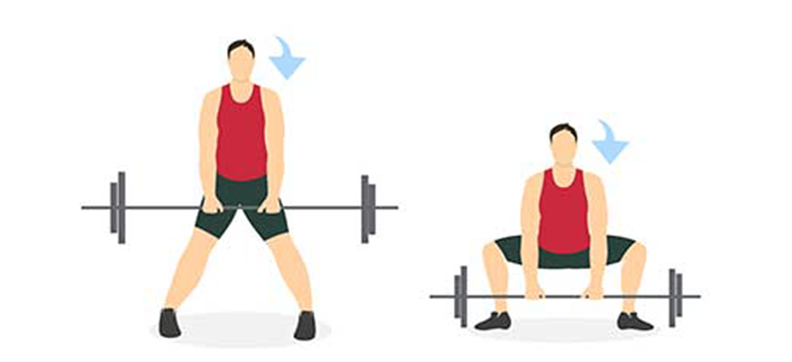

مربیان اختصاصی باشگاه هولدینگ
پیام رضایی
۱۵ سال سابقه کار

علی صادقی
۱۷ سال سابقه کار

 





ورزش تمرین مقاومتی کل بدن یا همان TRX، یک تمرین متفاوت فقط با طناب است. وزنههای سنگین یا تکرارهای با شدت بالا را فراموش کنید، این وسیله ساده شما را در مقابل اضافه وزن بدنتان قرار میدهد. TRXاز یک بند استفاده میکند که معمولاً از سقف آویزان شده و حلقههایی برای دستها یا پاها در دو طرف آن قرار دارد.

تمرینات فانکشنال شامل تمریناتی از بدنسازی، پیلاتس و هوازی است که بهطور خاص با هدف «بالا بردن توانایی کلی بدن برای فعالیتهای زندگی» انجام میشود. شرکت در جلسات تمرینی فانکشنال احتیاج به پیش زمینه فیتنسی ندارد و با هر سطحی – حتی با وجود آسیبدیدگی و جراحت – میتوانید از این تمرینات بهرهمند شوید.

تمرینات فانکشنال شامل تمریناتی از بدنسازی، پیلاتس و هوازی است که بهطور خاص با هدف «بالا بردن توانایی کلی بدن برای فعالیتهای زندگی» انجام میشود. شرکت در جلسات تمرینی فانکشنال احتیاج به پیش زمینه فیتنسی ندارد و با هر سطحی – حتی با وجود آسیبدیدگی و جراحت – میتوانید از این تمرینات بهرهمند شوید.
بهداشت را رعایت کنید. به نظر ساده می رسد اما در عمل گاها همه ما نسبت به آن سهل انگاری می کنیم. رعایت بهداشت نه تنها محیط را برای دیگران بهتر می کند بلکه باعث میشود حس خوبی نسبت به تمرین کردن داشته باشیم. از مهم ترین نکات در این رابطه به موارد زیر می شود اشاره کرد. از لباس تمیز استفاده کنید. پس از هر جلسه تمرین لباس خود را بشویید و برای جلسه بعدی آماده کنید. به این شکل اطمینان پیدا می کنید که لباس شما برای جلسه بعدی آماده است. همچنین بهتر است از دو دست لباس استفاده کنید. انداختن ساک باشگاه یک گوشه پس از تمرین باعث می شود لباس خیس از عرق شما تبدیل به یک مزرعه مناسب برای انواع قارچها شود که در نتیجه می تواند به راحتی پوستتان را بیمار کند. با خودتان حوله ببرید. یک حوله کوچک استفاده کنید که در هنگام انجام حرکات روی تخته ها بیاندازید. به این شکل احتمال انتقال بیماری ها تا حد بسیار زیادی کاهش می یابد و در نتیجه سالم تر می مانید. از اسپری بدن استفاده کنید. نیازی نیست یک اسپری را روی بدن خود خالی کنید و فقط یک فشار کوچک شاید بتواند تفاوت چشم گیری ایجاد کند. قبل، حین و بعد تمرین آب بنوشید. برای یک تمرین یک ساعتی یک تا یک و نیم لیتر نوشیدن آب می تواند تفاوت چشم گیری ایجاد کند. بعد از تمرین دوش بگیرید. این نه تنها برای بهداشت، بلکه برای ریکاوری نیز اهمیت دارد و استرس بدن را کاهش می دهد. قبل تمرین گرم کنید گرم کردن قبل از تمرین فواید زیادی دارد. این باعث می شود دمای بدن افزایش یافته و خون به عضلات مختلف شما برسد. همچنین انعطاف پذیری و دامنه حرکتی را هم افزایش خواهد داد. به ترتیب زیر عمل کنید. ۵ تا ۱۵ دقیقه هوازی سبک تا متوسط داشته باشید. اگر لاغر اندام هستید ۵ تا ۱۰ دقیقه و اگر اضافه وزن دارید شاید ۱۵ دقیقه برایتان مناسب تر باشد. می توانید از دویدن، راه رفتن روی تردمیل، تردمیل در شیب، دوچرخه ثابت و طناب زدن بهره بگیرید. دقت کنید که لازم نیست این هوازی شدید باشد چرا که شدید بودن تمرین باعث می شود انرژی شما برای وزنه زدن تحلیل برود. چند نرمش انجام دهید. حرکاتی مانند چرخاندن دست ها، چرخش کمر، اسکات با وزن بدن، لانگز با وزن بدن، پروانه و مانند آن باعث می شود برای انجام حرکات سنگین تر آماده شوید. از کشش های ایستا اجتناب کنید. کشیدن و نگه داشتن برای پس از تمرین مناسب تر است.